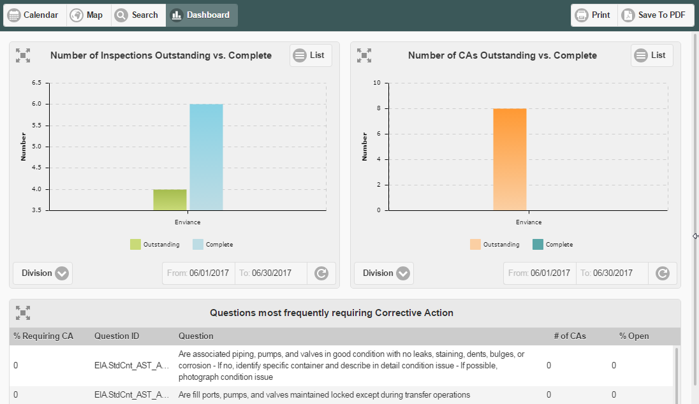

The Dashboard provides a corporate-wide summary of key metrics for inspections and corrective actions.
The dashboard contains four panels:
Number of Inspections Outstanding vs. Complete
This chart shows inspections by division, facility or company-wide. The display can be filtered by dates.
Click any bar in the chart to drill down to see just the records for the selected bar.
Number of Corrective Actions Outstanding vs. Complete
This chart shows corrective actions by division, facility or company-wide. The display can be filtered by dates.
Click any bar in the chart to drill down to see just the records for the selected bar.
Questions most frequently requiring Corrective Action
This table shows the top ten questions with the most corrective actions, filtered by inspection type.
Equipment/Areas most frequently requiring Corrective Action
This table shows the top ten Inspection Points most frequently requiring corrective actions, filtered by type. Dashboard results will include only those Inspection Points that the user has access to.

Select the filter for the chart from the options in the list at the bottom.
Select a date range for the chart display using the date filter at the bottom of the dashboard, then click Refresh button.
Change display to List or Chart using the button top right in the dashboard.
Expand a single dashboard to full screen with the Expand button.
By selecting your filter criteria for each panel you can create an instant report which can be saved to print.
To save dashboard data in printable form: